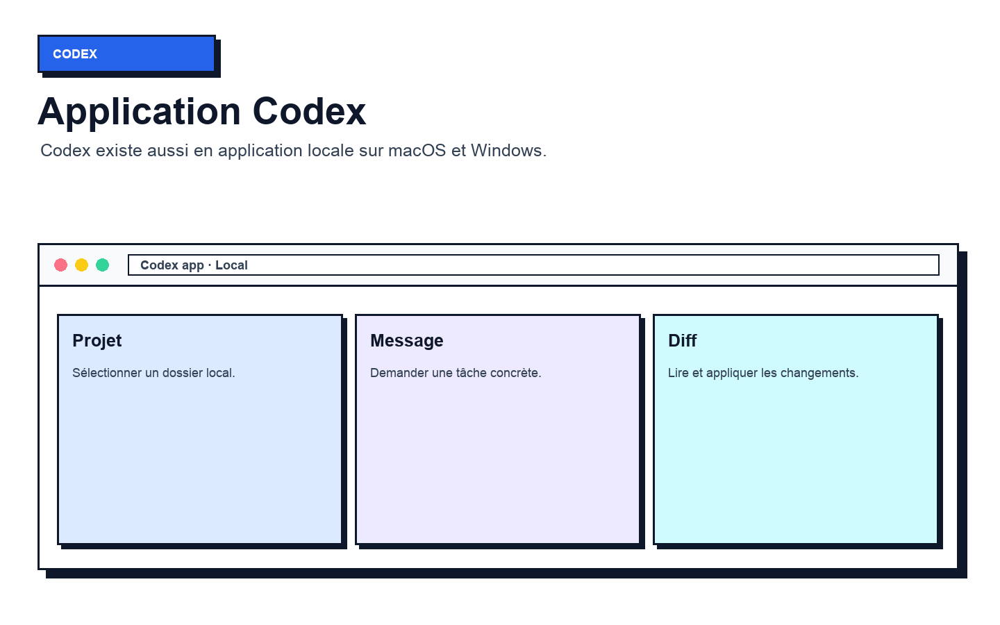
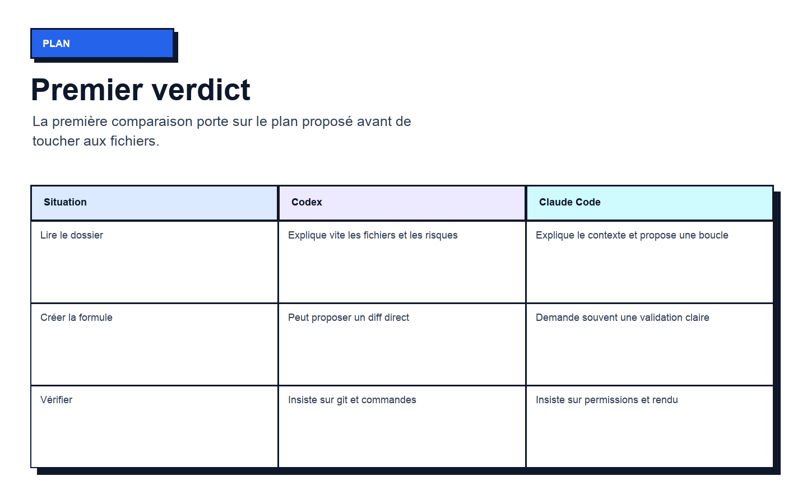
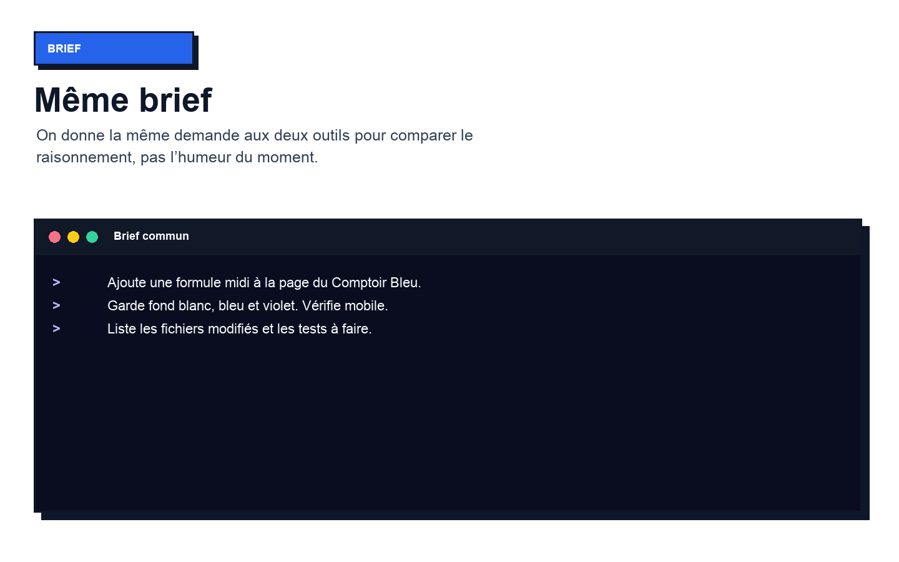
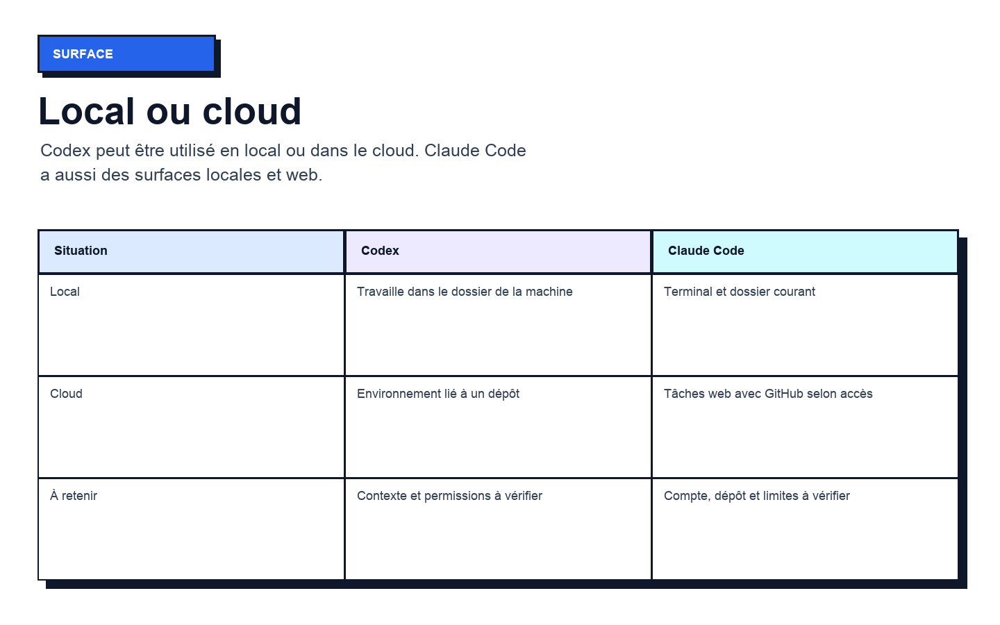
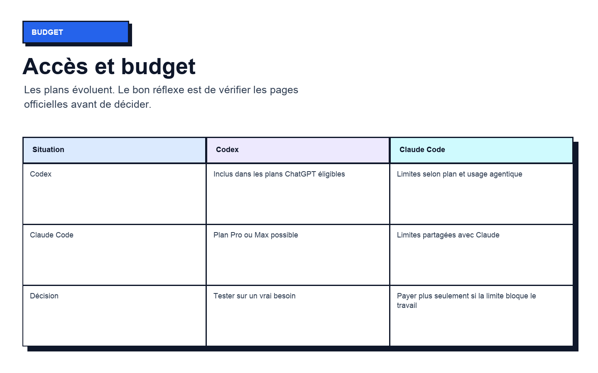
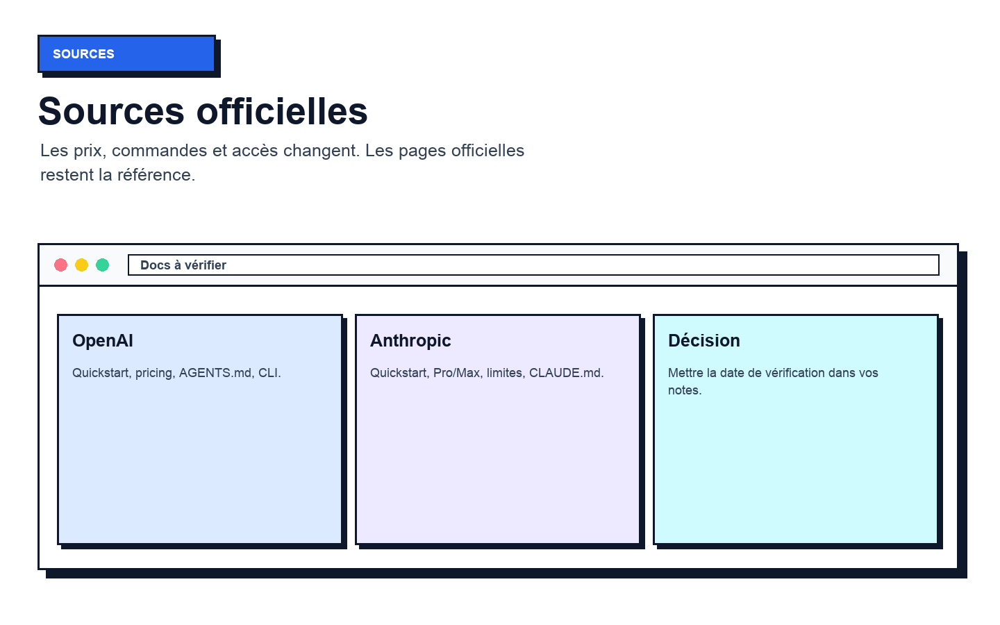
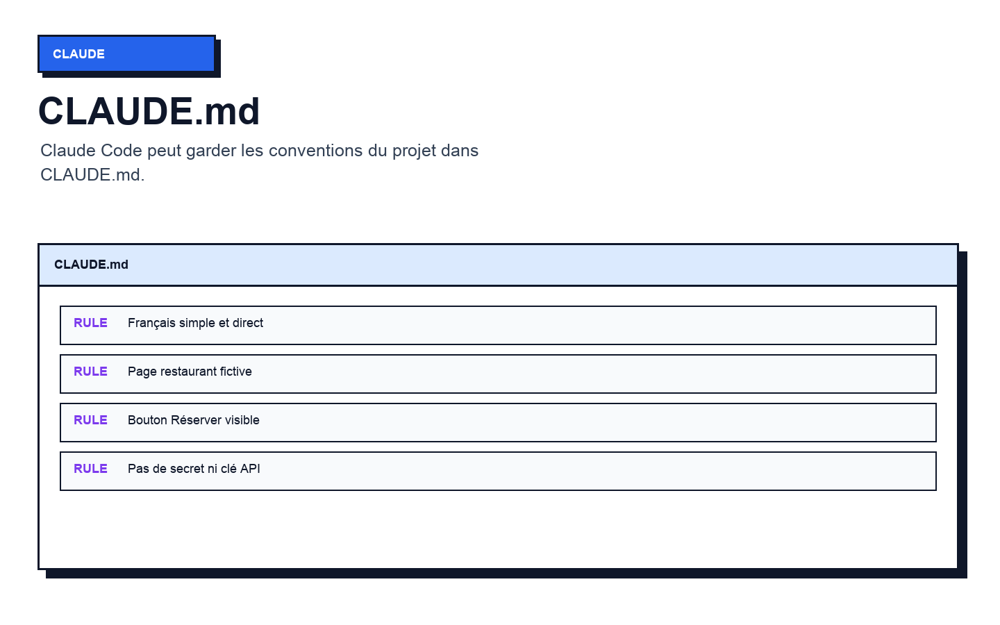
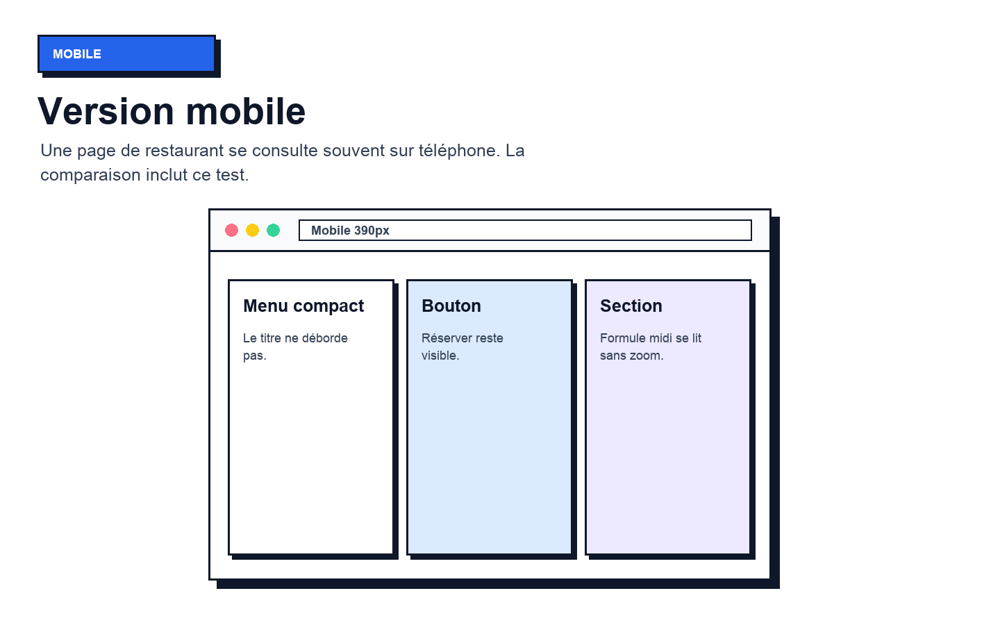
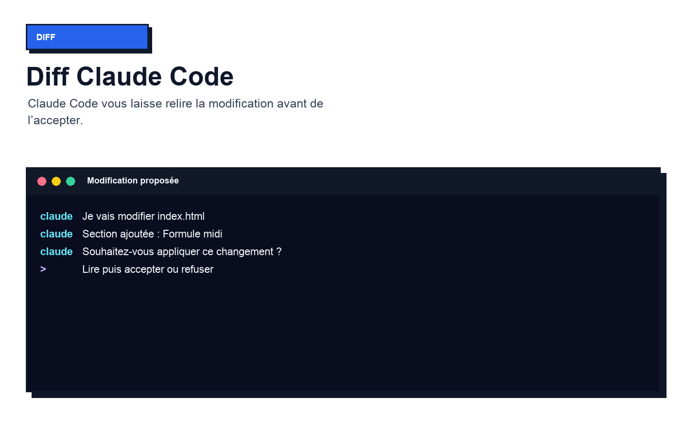
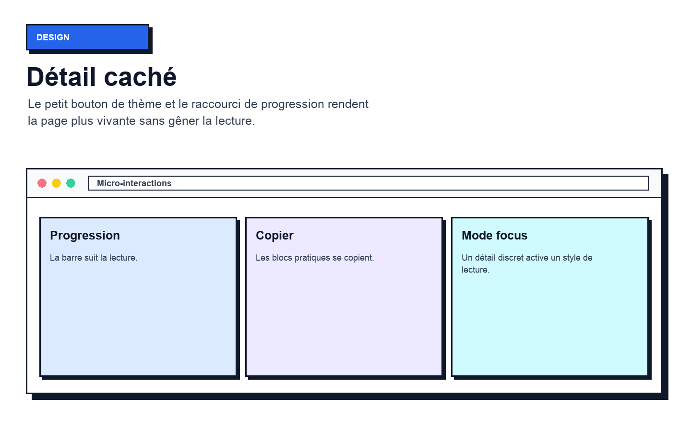

Dans cette séance, on va voir comment bien utiliser Codex. On va comprendre à quoi il sert, comment l’installer, comment lui demander un travail propre, puis quelle est la vraie différence avec Claude Code. Le but est simple : savoir quel outil lancer quand il faut créer, corriger, relire ou livrer un projet.
80
sections guidées
33+
visuels d’interface
1
exemple qui se suit
Même projet, même brief, même contrôle.
Le parcours de la séance
On commence par les bases : c’est quoi Codex, ce qu’il peut faire dans un dossier, et pourquoi ce n’est pas exactement la même chose que Claude Code. Ensuite, on utilise le même exemple pour comparer les deux outils sans théorie inutile.
Brief commun
Brief maître :
Dans la page du Comptoir Bleu, ajoute une formule midi.
Garde fond blanc, accents bleu/violet, bouton Réserver visible.
Vérifie mobile et résume les fichiers modifiés.
Avant de comparer deux agents, le projet doit être clair. Le fil rouge reste Le Comptoir Bleu, une page business simple que l’on peut regarder, corriger et publier.
Ce qui se passe
La première séance a posé une base : un dossier, une page simple et l’habitude de vérifier dans le navigateur. La séance 2 ne recommence pas à zéro. Elle reprend ce même terrain pour poser une question plus utile au quotidien : quand faut-il utiliser Codex, quand faut-il utiliser Claude Code, et quand faut-il les faire travailler ensemble ?
Action terrain
Ouvrez le dossier du Comptoir Bleu ou créez un dossier test avec une page `index.html`. Le but n’est pas d’avoir un projet parfait, mais d’avoir une base visible.
Preuve attendue
La page s’ouvre dans le navigateur et vous savez expliquer en une phrase ce qu’elle contient.
Tip simple
À quoi sert une comparaison si les deux outils ne regardent pas le même projet ? Commencez toujours par ce point.
Visuel 01 · Comprendre · Le point de départ après la séance 1
02ComprendreActe 1 - Le terrain commun
Visuel 02 · Comprendre · La mission du Comptoir Bleu
La mission du Comptoir Bleu
Le propriétaire fictif veut une amélioration concrète : rendre la formule midi plus visible, garder le bouton Réserver au bon endroit et vérifier le rendu mobile. C’est volontairement simple. Une tâche simple permet de voir le comportement réel de chaque agent sans se noyer dans une architecture compliquée.
Le geste à faire
Écrivez la mission en une phrase : `Ajouter une formule midi claire sur la page du Comptoir Bleu et vérifier que le bouton Réserver mène au contact.`
Côté Codex
Codex sera testé sur une demande courte, puis sur une relecture de diff.
Côté Claude Code
Claude Code sera testé sur la même demande et sur la correction guidée dans le terminal.
La mission tient sur une seule ligne et ne mélange pas dix objectifs.
03ComprendreActe 1 - Le terrain commun
Bloc pratique à copier
Codex en phrase simple
Codex est l’agent de code d’OpenAI. Il aide à écrire, relire et livrer du code. Les docs officielles indiquent qu’il peut être utilisé dans plusieurs surfaces : application, CLI, extension IDE, web ou cloud. Pour cette séance, retenez seulement ceci : Codex peut travailler avec votre projet et vous aider à comprendre ou modifier des fichiers.
Côté Codex
Codex est intéressant quand vous voulez un second avis, une relecture, un plan ou une tâche locale/cloud selon le contexte.
Côté Claude Code
Claude Code a une logique très proche côté terminal, mais avec les conventions Anthropic et le fichier `CLAUDE.md`.
Bloc pratique
Ouvrez la page officielle Codex et repérez les surfaces disponibles : app, CLI, IDE, cloud. Ne choisissez pas encore. Observez seulement les options.
Vérification :
Vous savez dire que Codex n’est pas juste une réponse de chat : c’est un agent de travail autour du code.
Tip :
Ne retenez pas tous les noms de modèles. Retenez plutôt la question : où l’agent travaille-t-il et que va-t-il modifier ?

Visuel 03 · Comprendre · Codex en phrase simple
04ComprendreActe 1 - Le terrain commun
Comprendre
Claude Code en phrase simple
Claude Code est l’outil de ligne de commande d’Anthropic pour accéder à Claude dans un dossier de travail. Le Help Center explique qu’il permet de déléguer des tâches de code tout en gardant de la transparence et du contrôle. En clair : vous lancez `claude`, vous expliquez l’objectif, vous lisez ce qu’il propose, puis vous vérifiez.
Action
Relisez la définition officielle de Claude Code et reformulez-la avec vos mots : `Claude Code travaille dans mon terminal, dans mon dossier, avec mon accord.`
Preuve
La définition est comprise sans jargon et sans phrase longue.
Codex
Codex et Claude Code ont une zone commune : aider sur un vrai projet de code.
Claude Code
Claude Code se distingue par son usage terminal très direct et ses commandes de session comme `/login`, `/clear`, `/compact` ou `/model`.
Tip
Si la définition ne tient pas en une phrase, la pratique sera floue. Simplifiez avant d’aller plus loin.
Visuel 04 · Comprendre · Claude Code en phrase simple
05ComprendreActe 1 - Le terrain commun
La comparaison honnête
Comparer ne veut pas dire choisir un vainqueur définitif. Sur le terrain, le bon outil dépend du moment : installation, création, relecture, correction, publication, budget, habitudes. Une personne peut préférer Codex pour relire et Claude Code pour exécuter, ou l’inverse. Le support montre une méthode de décision.
Action terrain
Créez trois colonnes dans vos notes : `Situation`, `Codex`, `Claude Code`. Vous les remplirez au fil de la séance.
À vérifier
La comparaison porte sur une situation réelle, pas sur une préférence personnelle.

Visuel 05 · Comprendre · La comparaison honnête
Côté Codex
Codex sera jugé sur clarté, contrôle, installation, diff, review et surfaces disponibles.
Côté Claude Code
Claude Code sera jugé sur terminal, permissions, contexte, commandes, limites et continuité de travail.
La bonne question n’est pas `lequel est le meilleur ?` mais `lequel m’aide le plus maintenant ?`
06ComprendreActe 1 - Le terrain commun
Le même dossier pour les deux
Si Codex travaille dans un dossier et Claude Code dans un autre, le résultat ne veut plus rien dire. Les deux doivent voir la même page, les mêmes images, les mêmes règles et le même état Git. Cette discipline paraît basique, mais elle évite une grosse partie des confusions.
Action + preuve
Placez-vous dans le dossier `restaurant-comptoir-bleu`. Vérifiez le chemin avec `pwd` sur Mac/Linux/WSL ou avec le chemin affiché dans le terminal Windows.
Les deux agents pointent vers le même dossier et vous voyez les mêmes fichiers.
Visuel 06 · Comprendre · Le même dossier pour les deux
Codex
Codex travaille depuis le dossier sélectionné dans l’app ou depuis le terminal avec `codex`.
Claude Code
Claude Code travaille depuis le terminal avec `claude` dans le dossier courant.
Tip terrain
Avant de parler à l’agent, demandez-vous : est-ce que je suis vraiment au bon endroit ?
07ComprendreActe 1 - Le terrain commun
Le même brief pour les deux
Avant de comparer deux agents, le projet doit être clair. Le fil rouge reste Le Comptoir Bleu, une page business simple que l’on peut regarder, corriger et publier.
Ce qui se passe
Une comparaison propre impose la même consigne. Si vous donnez à Codex une demande claire et à Claude Code une demande vague, vous comparez surtout votre prompt. Le brief commun doit dire le contexte, le résultat attendu, les limites et la vérification.
Action terrain
Préparez le brief commun : `Dans la page du Comptoir Bleu, ajoute une formule midi. Garde fond blanc, accents bleu/violet, bouton Réserver visible, version mobile propre. À la fin, résume les fichiers modifiés.`
Preuve attendue
Le même texte peut être envoyé aux deux outils.
Tip simple
Un bon brief est comme une commande de terrain : court, précis, vérifiable.

Visuel 07 · Comprendre · Le même brief pour les deux
08ComprendreActe 1 - Le terrain commun
Visuel 08 · Comprendre · Les critères de décision
Les critères de décision
Avant de lancer les agents, fixez les critères. On va observer cinq points : la clarté du plan, la prudence avant modification, la qualité du texte produit, la facilité à vérifier le résultat et le risque de changements inutiles. Ces critères empêchent de juger au feeling.
Le geste à faire
Écrivez ces cinq critères au-dessus de votre tableau de comparaison.
Côté Codex
Codex peut être très utile pour structurer les risques et relire un diff.
Côté Claude Code
Claude Code peut être très utile pour dérouler une correction guidée et expliquer le terminal.
Chaque résultat sera noté avec les mêmes critères.
09ComprendreActe 1 - Le terrain commun
Bloc pratique à copier
La règle du résultat visible
Le test final n’est jamais la phrase de l’agent. Le test final est la page ouverte, le bouton testé, le mobile regardé et le diff compris. Une réponse peut être polie et pourtant laisser une page cassée. À l’inverse, une réponse courte peut produire un résultat propre.
Côté Codex
Codex doit produire ou relire quelque chose de visible : diff, page, checklist, message de livraison.
Côté Claude Code
Claude Code doit produire la même preuve visible.
Bloc pratique
Après chaque modification, ouvrez la page et regardez la zone touchée. Le navigateur est votre juge principal.
Vérification :
Le résultat se voit dans la page, pas seulement dans le terminal.
Tip :
À quoi sert une belle explication si le bouton Réserver ne clique nulle part ?
Visuel 09 · Comprendre · La règle du résultat visible
10ComprendreActe 1 - Le terrain commun
Comprendre
Le plan de travail
Dans cette séance, le but est de comprendre comment bien utiliser Codex. On va voir ce que Codex fait, comment l’installer, comment lui parler, comment lire ses modifications et surtout comment savoir s’il faut choisir Codex ou Claude Code pour une tâche précise.
Action
Gardez ce plan ouvert pendant la lecture. Il sert de carte, pas de texte à apprendre par cœur.
Preuve
Vous savez ce que la séance va vous apprendre et pourquoi c’est utile.
Codex
Codex sera introduit progressivement, sans supposer que vous connaissez déjà l’outil.
Claude Code
Claude Code sera replacé en face de Codex pour montrer les vraies différences dans un travail concret.
Tip
Si une étape vous semble trop rapide, revenez à la preuve : dossier, brief, fichier, navigateur.
Visuel 10 · Comprendre · Le plan de travail
11AccèsActe 2 - Installer et accéder
Les surfaces Codex à connaître
Les docs OpenAI présentent Codex dans plusieurs surfaces : application locale, extension IDE, CLI, web et cloud. Cela peut sembler beaucoup, mais le choix reste simple : si vous voulez travailler depuis un dossier local, l’app ou le CLI suffisent. Si vous voulez déléguer une tâche liée à un dépôt, le cloud peut devenir utile.
Action terrain
Ouvrez la documentation Codex Quickstart et repérez les options `App`, `IDE`, `CLI`, `Cloud`.
À vérifier
Vous savez qu’il existe plusieurs portes d’entrée, sans les mélanger.

Visuel 11 · Accès · Les surfaces Codex à connaître
Côté Codex
Codex propose une app macOS/Windows, un CLI, une extension IDE et des tâches cloud selon l’accès.
Côté Claude Code
Claude Code propose terminal, web, desktop et intégrations selon le plan et la configuration.
Ne choisissez pas l’outil parce que l’interface paraît plus moderne. Choisissez-le selon votre façon de travailler.
12AccèsActe 2 - Installer et accéder
Installation Codex CLI
Le Quickstart officiel indique l’installation du CLI avec un installateur autonome sur macOS/Linux, une commande PowerShell sur Windows, et aussi des options npm ou Homebrew. Pour une première prise en main, copiez la commande officielle du jour plutôt qu’une commande vue dans une ancienne vidéo.
Action + preuve
Sur macOS/Linux : `curl -fsSL https://chatgpt.com/codex/install.sh | sh`. Sur Windows : utilisez la commande PowerShell officielle. Alternative : `npm install -g @openai/codex` ou `brew install --cask codex`.
La commande `codex` répond dans le terminal.
Visuel 12 · Accès · Installation Codex CLI
Codex
Codex peut ensuite se lancer avec `codex` depuis le dossier du projet.
Claude Code
Claude Code utilise une commande différente, donc ne mélangez pas les installations.
Tip terrain
Tip terrain : gardez une note avec la date de vérification des commandes.
13AccèsActe 2 - Installer et accéder
Connexion Codex
Une comparaison sérieuse commence par les accès. On vérifie les commandes officielles, les comptes, les plans et les limites avant de demander une modification.
Ce qui se passe
Codex demande une connexion avec un compte ChatGPT ou une clé API selon le mode. Les pages officielles indiquent que les plans ChatGPT incluent Codex avec des limites variables. Pour cette séance, partez avec votre compte ChatGPT, sauf cas précis où une clé API est demandée.
Action terrain
Lancez `codex` dans le dossier test, puis suivez le flux de connexion. Ne collez pas de clé API dans un fichier du projet.
Preuve attendue
La session Codex démarre et reconnaît votre dossier.
Tip simple
Une clé API est un secret. Si elle apparaît dans une capture ou un dépôt public, c’est une erreur.
Visuel 13 · Accès · Connexion Codex
14AccèsActe 2 - Installer et accéder
Visuel 14 · Accès · Installation Claude Code
Installation Claude Code
La documentation Claude Code indique une installation native. Sur macOS/Linux/WSL, la commande officielle actuelle passe par `https://claude.ai/install.sh`. Sur Windows PowerShell, elle passe par `https://claude.ai/install.ps1`. Le terminal utilisé compte beaucoup.
Le geste à faire
Installez Claude Code avec la commande officielle adaptée à votre système. Lancez ensuite `claude` depuis le dossier.
Côté Codex
Codex et Claude Code ne partagent pas la même commande. Gardez deux lignes distinctes dans vos notes.
Côté Claude Code
Claude Code démarre avec `claude` et peut demander `/login` au premier usage ou pour changer de compte.
La session Claude Code s’ouvre dans le terminal.
15AccèsActe 2 - Installer et accéder
Bloc pratique à copier
Compte Claude et abonnement
Le Help Center Anthropic explique que Claude Code peut être relié aux plans Pro ou Max avec les mêmes identifiants que Claude. Il précise aussi que Pro et Max partagent les limites entre Claude et Claude Code. Donc une grosse session de code peut compter dans le même budget d’usage que vos autres demandes Claude.
Côté Codex
Codex dépend de l’accès ChatGPT ou API choisi.
Côté Claude Code
Claude Code dépend du compte Claude, du plan et du mode de connexion.
Bloc pratique
Connectez-vous avec le bon compte Claude. Si vous êtes déjà connecté via un autre mode, utilisez `/login` pour vérifier.
Vérification :
Le compte affiché est celui que vous voulez utiliser pour cette séance.
Tip :
La question simple : est-ce que je teste l’outil, ou est-ce que je pars déjà sur un usage quotidien intensif ?

Visuel 15 · Accès · Compte Claude et abonnement
16AccèsActe 2 - Installer et accéder
Accès
Prix à lire avec prudence
Les prix changent. Au 3 juin 2026, la page Codex Pricing affiche Free à 0 $, Go à 8 $/mois, Plus à 20 $/mois et Pro à partir de 100 $/mois côté Codex. La page Claude Help Center affiche Free à 0 $, Pro à 20 $/mois, Max 5x à 100 $/mois et Max 20x à 200 $/mois. Vérifiez toujours les pages officielles avant de payer.
Action
Ouvrez les deux pages de pricing et notez le plan qui correspond à votre usage réel, pas au plan qui paraît le plus impressionnant.
Preuve
Vous savez où vérifier les prix et vous ne décidez pas sur une capture ancienne.
Codex
Codex est rattaché aux plans ChatGPT/Codex avec des limites selon plan et usage.
Claude Code
Claude Code est rattaché aux plans Claude ou à une facturation API selon le mode.
Tip
Payez plus seulement si la limite bloque votre travail quotidien. Sinon, testez d’abord.
Visuel 16 · Accès · Prix à lire avec prudence
17AccèsActe 2 - Installer et accéder
API ou abonnement
L’abonnement sert à utiliser l’outil avec votre compte. L’API sert quand une application, un script ou une automatisation appelle le modèle. Les deux peuvent mener à des coûts, mais ce ne sont pas les mêmes habitudes. Le Help Center Claude avertit aussi qu’une variable `ANTHROPIC_API_KEY` peut faire utiliser l’API au lieu du plan.
Action terrain
Vérifiez si vous avez une clé API dans votre environnement seulement si vous savez pourquoi elle est là. Sinon, restez sur la connexion par compte.
À vérifier
Vous savez si vous utilisez un abonnement ou une facturation API.

Visuel 17 · Accès · API ou abonnement
Côté Codex
Codex peut accepter une clé API pour certains usages, avec des fonctionnalités cloud parfois différentes.
Côté Claude Code
Claude Code peut utiliser Pro/Max ou API selon la connexion et les variables d’environnement.
Si le budget vous surprend, cherchez d’abord le mode de connexion utilisé.
18AccèsActe 2 - Installer et accéder
La première commande Codex
Une fois installé, Codex se lance avec `codex`. Le CLI officiel indique qu’il ouvre une interface terminale capable de lire le dépôt, proposer un plan, éditer et exécuter des commandes avec validation selon les modes. Pour la séance, on commence sans demander de modification.
Action + preuve
Dans le dossier, tapez `codex`, puis demandez : `Explique ce projet sans modifier les fichiers.`
Codex répond sans toucher au projet.
Visuel 18 · Accès · La première commande Codex
Codex
Codex doit vous montrer qu’il comprend le dossier avant d’agir.
Claude Code
Claude Code fera exactement la même étape plus tard pour comparer.
Tip terrain
Le premier message ne doit pas être `améliore tout`. Il doit être `regarde et explique`.
19AccèsActe 2 - Installer et accéder
La première commande Claude Code
Une comparaison sérieuse commence par les accès. On vérifie les commandes officielles, les comptes, les plans et les limites avant de demander une modification.
Ce qui se passe
Claude Code se lance avec `claude`. Le Quickstart explique qu’il peut analyser les fichiers du projet et répondre sur la structure avant de faire un changement. Comme pour Codex, on commence avec une demande sans modification.
Action terrain
Dans le même dossier, tapez `claude`, puis demandez : `Explique ce projet sans modifier les fichiers.`
Preuve attendue
Claude Code décrit le dossier et ne crée rien.
Tip simple
Si un agent modifie avant que vous l’ayez demandé, stoppez et revenez à une demande plus stricte.
Visuel 19 · Accès · La première commande Claude Code
20AccèsActe 2 - Installer et accéder
Visuel 20 · Accès · Le diagnostic avant la pratique
Le diagnostic avant la pratique
Avant de comparer, vérifiez trois preuves : `codex` répond, `claude` répond, et la page s’ouvre localement. Sans ces trois preuves, la séance va se transformer en dépannage. Le dépannage est utile, mais il ne doit pas remplacer la comparaison.
Le geste à faire
Faites une mini-checklist : commande Codex, commande Claude Code, page ouverte, bon dossier, compte attendu.
Côté Codex
Codex est prêt côté installation et accès.
Côté Claude Code
Claude Code est prêt côté installation et accès.
Les deux outils sont prêts à recevoir le même brief.
21CadreActe 3 - Préparer le dossier
Bloc pratique à copier
Le dossier propre
Le dossier `restaurant-comptoir-bleu` doit contenir seulement le projet de test. Si vous laissez des anciens essais, des captures privées ou des fichiers d’un autre client, les agents peuvent les lire ou les prendre en compte. Une comparaison propre commence par un dossier propre.
Côté Codex
Codex travaille mieux quand le dossier ne contient pas de bruit inutile.
Côté Claude Code
Claude Code aussi, car le contexte lu influence ses propositions.
Bloc pratique
Rangez le dossier. Gardez `index.html`, les images utiles, un README et les fichiers de règles. Supprimez les brouillons inutiles si vous savez qu’ils ne servent pas.
Vérification :
Chaque fichier du dossier a un rôle clair.
Tip :
Un dossier propre fait gagner plus de temps qu’un prompt compliqué.
Visuel 21 · Cadre · Le dossier propre
22CadreActe 3 - Préparer le dossier
Cadre
README comme carte simple
Le README n’est pas réservé aux gros projets. Dans cette séance, il explique le but : page fictive du Comptoir Bleu, formule midi à ajouter, test mobile à vérifier. Quand vous revenez le lendemain, cette carte évite de tout redemander.
Action
Créez ou mettez à jour `README.md` avec trois lignes : objectif, fichier principal, vérifications attendues.
Preuve
Vous pouvez rouvrir le projet et comprendre le but sans la conversation.
Codex
Codex peut lire ce README pour comprendre l’intention.
Claude Code
Claude Code peut aussi s’appuyer dessus comme contexte de projet.
Tip
Écrivez le README pour vous, pas pour impressionner. Simple et utile.
Visuel 22 · Cadre · README comme carte simple
23CadreActe 3 - Préparer le dossier
AGENTS.md pour Codex
Les docs OpenAI expliquent que Codex lit les fichiers `AGENTS.md` avant de travailler. Ce fichier sert à donner des attentes : commandes à lancer, style de code, limites, préférences. Pour notre page, il doit rester court, parce qu’un fichier de règles trop long devient lui-même un problème.
Action terrain
Ajoutez `AGENTS.md` avec : fond blanc, accents bleu/violet, pas de dépendance sans accord, vérifier mobile, résumer les fichiers modifiés.
À vérifier
Codex peut citer ou appliquer ces règles dans ses réponses.
Visuel 23 · Cadre · AGENTS.md pour Codex
Côté Codex
Codex a un cadre projet explicite.
Côté Claude Code
Claude Code n’utilise pas ce fichier comme source principale, mais le dossier reste compréhensible.
Si Codex répète une erreur deux fois, ajoutez une règle courte dans `AGENTS.md`.
24CadreActe 3 - Préparer le dossier
CLAUDE.md pour Claude Code
Claude Code utilise `CLAUDE.md` pour garder des conventions de projet. Les docs Anthropic recommandent de commencer par ce fichier quand vous avez des règles persistantes. Dans notre cas, il sert à rappeler le votre, le style, la contrainte mobile et la sécurité.
Action + preuve
Ajoutez `CLAUDE.md` avec les mêmes règles que `AGENTS.md`, adaptées à Claude Code.
Claude Code comprend le cadre sans que vous recopiiez tout à chaque prompt.

Visuel 24 · Cadre · CLAUDE.md pour Claude Code
Codex
Codex reste cadré par `AGENTS.md`.
Claude Code
Claude Code est cadré par `CLAUDE.md`.
Tip terrain
Gardez ces fichiers maigres. Ils sont faits pour guider, pas pour remplacer une demande claire.
25CadreActe 3 - Préparer le dossier
Même règle, deux fichiers
Le dossier devient le contrat commun. Les règles, le brief et l’état Git donnent aux deux agents le même terrain de travail.
Ce qui se passe
Il peut sembler répétitif d’avoir `AGENTS.md` et `CLAUDE.md`, mais cette duplication est utile pour une séance de comparaison. Chaque agent reçoit son fichier naturel, avec les mêmes règles de fond. On réduit ainsi les écarts qui viennent du cadre.
Action terrain
Copiez les règles essentielles dans les deux fichiers, avec le même sens et des phrases courtes.
Preuve attendue
Les deux agents reçoivent la même intention de projet.
Tip simple
Si une règle est importante, elle doit exister là où l’agent va vraiment la lire.
Visuel 25 · Cadre · Même règle, deux fichiers
26CadreActe 3 - Préparer le dossier
Visuel 26 · Cadre · État Git avant le test
État Git avant le test
Git n’est pas obligatoire pour comprendre, mais il rend la comparaison beaucoup plus nette. Avant le test, il faut savoir ce qui est déjà modifié. Sinon, vous ne saurez pas si une ligne vient de Codex, de Claude Code ou d’un ancien essai.
Le geste à faire
Lancez `git status --short` si le projet est dans Git. Sinon, notez les fichiers présents avant de commencer.
Côté Codex
Codex pourra être jugé sur les fichiers réellement touchés.
Côté Claude Code
Claude Code pourra être jugé sur la même base.
Vous connaissez l’état de départ.
27CadreActe 3 - Préparer le dossier
Bloc pratique à copier
Branche ou copie de sécurité
Pour tester deux outils, il faut pouvoir revenir en arrière. Une branche Git, un commit de départ ou une copie du dossier évite de perdre du temps si un agent change trop de choses. Cette sécurité rend la pratique plus calme.
Côté Codex
Codex peut travailler sans peur de casser définitivement la page.
Côté Claude Code
Claude Code aussi, parce que le retour arrière est prévu.
Bloc pratique
Créez un commit de départ ou une branche `comparaison-codex-claude` si Git est prêt.
Vérification :
Vous pouvez revenir au point de départ.
Tip :
La sécurité n’est pas une perte de temps. C’est ce qui permet d’oser tester.
Visuel 27 · Cadre · Branche ou copie de sécurité
28CadreActe 3 - Préparer le dossier
Cadre
Le brief maître
Le brief maître est la consigne que l’on donnera aux deux agents. Il doit rester assez précis pour empêcher les écarts et assez court pour être copiable. Il doit aussi demander un résumé final, parce qu’un agent qui ne résume pas ses changements vous laisse faire le tri seul.
Action
Écrivez le brief maître dans `README.md` sous le titre `Mission séance 2`.
Preuve
Le brief peut être copié dans Codex et Claude Code sans modification.
Codex
Codex reçoit exactement la mission prévue.
Claude Code
Claude Code reçoit exactement la même mission.
Tip
Un brief qui ne dit pas comment vérifier crée souvent un résultat difficile à juger.
Visuel 28 · Cadre · Le brief maître
29CadreActe 3 - Préparer le dossier
Les données fictives
Le Comptoir Bleu est fictif. Les prix, horaires, plats et coordonnées doivent rester fictifs aussi. Cela permet de publier, partager et corriger sans risque. Le support technique doit donner une méthode, pas exposer une vraie donnée privée.
Action terrain
Vérifiez que la page ne contient pas de vrai numéro, vraie adresse personnelle, clé API ou information sensible.
À vérifier
Le projet peut être consulté sans dévoiler d’information privée.
Visuel 29 · Cadre · Les données fictives
Côté Codex
Codex ne doit pas inventer ou conserver de secret.
Côté Claude Code
Claude Code ne doit pas non plus ajouter de données réelles.
Un projet de formation doit être publiable sans nettoyage stressant.
30CadreActe 3 - Préparer le dossier
Le feu vert de départ
Le cadre est prêt quand cinq preuves sont là : les deux commandes répondent, le dossier est propre, les règles existent, l’état de départ est connu et le brief maître est écrit. À partir de là, la comparaison peut commencer sans partir dans tous les sens.
Action + preuve
Lisez la checklist à voix haute ou dans vos notes. Si un point manque, corrigez-le avant de lancer le duel.
Le dossier est prêt pour un test juste.
Visuel 30 · Cadre · Le feu vert de départ
Codex
Codex va recevoir un contexte propre.
Claude Code
Claude Code va recevoir le même contexte propre.
Tip terrain
La méthode paraît lente au début. Elle devient rapide quand vous la refaites tous les jours.
31CodexActe 4 - Premier passage Codex
Lecture du projet par Codex
Codex reçoit le brief en premier. On observe son plan, son niveau de prudence, le diff proposé et les preuves de vérification.
Ce qui se passe
Avant de lui demander d’ajouter la formule, Codex doit lire le projet et expliquer ce qu’il voit. Cette étape montre s’il comprend la page existante. Elle montre aussi s’il respecte la demande de ne rien modifier pour l’instant.
Action terrain
Dans Codex : `Explique ce projet en 6 lignes. Ne modifie aucun fichier.`
Preuve attendue
La réponse décrit `index.html`, les règles et le but du Comptoir Bleu.
Tip simple
Si la réponse parle d’un fichier qui n’existe pas, le dossier ou le contexte est mauvais.
Visuel 31 · Codex · Lecture du projet par Codex
32CodexActe 4 - Premier passage Codex
Visuel 32 · Codex · Plan Codex avant modification
Plan Codex avant modification
Un bon agent ne saute pas tout de suite sur le fichier quand la tâche touche le rendu. Il propose un plan court : repérer le menu, ajouter une section formule midi, vérifier le bouton, tester mobile, résumer le diff. Le plan doit tenir en quelques étapes.
Le geste à faire
Demandez : `Avant de modifier, propose un plan en 5 étapes maximum pour ajouter la formule midi.`
Côté Codex
Codex montre comment il va procéder.
Côté Claude Code
Claude Code devra proposer un plan comparable.
Le plan est court, concret et adapté à la page.
33CodexActe 4 - Premier passage Codex
Bloc pratique à copier
Autorisation de changer
Après le plan, vous pouvez autoriser la modification. L’important est de garder la demande étroite. Codex ne doit pas refaire tout le site, changer la palette, renommer toutes les sections ou ajouter une dépendance inutile.
Côté Codex
Codex modifie peu de fichiers, idéalement `index.html` seulement.
Côté Claude Code
Claude Code sera évalué sur la même retenue.
Bloc pratique
Dites : `Applique seulement l’ajout de la formule midi et le lien du bouton si nécessaire. Ne refais pas tout le design.`
Vérification :
Les changements restent limités à la mission.
Tip :
La maîtrise vient souvent du mot `seulement` dans le prompt.
Visuel 33 · Codex · Autorisation de changer
34CodexActe 4 - Premier passage Codex
Codex
Diff Codex à lire
Le diff raconte la vérité du travail. Même si vous ne comprenez pas chaque ligne, vous pouvez repérer les titres ajoutés, les textes, les liens et les classes modifiées. Si le diff touche une zone sans rapport, demandez pourquoi.
Action
Lisez le diff ou demandez : `Résume le diff fichier par fichier, sans vendre le résultat.`
Preuve
Vous savez ce qui a changé et pourquoi.
Codex
Codex doit être capable d’expliquer ses changements simplement.
Claude Code
Claude Code devra produire le même niveau de lisibilité.
Tip
Un diff lu calmement vaut mieux qu’une confiance rapide.
Visuel 34 · Codex · Diff Codex à lire
35CodexActe 4 - Premier passage Codex
Aperçu Codex dans le navigateur
Après le diff, ouvrez la page. Le navigateur permet de voir les problèmes que le terminal ne montre pas : titre trop grand, bouton trop bas, section mal alignée, texte qui déborde. Ce test donne une preuve visuelle.
Action terrain
Ouvrez `index.html` et regardez le haut de page, la nouvelle formule et le bouton Réserver.
À vérifier
La formule midi apparaît et la page reste lisible.
Visuel 35 · Codex · Aperçu Codex dans le navigateur
Côté Codex
Codex est jugé sur le résultat visible.
Côté Claude Code
Claude Code sera jugé avec le même navigateur.
Ne dites pas `c’est bon` tant que vous n’avez pas ouvert la page.
36CodexActe 4 - Premier passage Codex
Test mobile après Codex
Un restaurant se consulte souvent sur mobile. La formule midi doit rester lisible sur une largeur étroite. Les cartes ne doivent pas déborder, le bouton doit rester cliquable et le texte ne doit pas écraser la section suivante.
Action + preuve
Réduisez la fenêtre ou utilisez un aperçu mobile, puis notez deux points : lisibilité et bouton.
La page fonctionne sur téléphone sans zoom.

Visuel 36 · Codex · Test mobile après Codex
Codex
Codex doit corriger si le mobile casse.
Claude Code
Claude Code devra passer le même test.
Tip terrain
Le mobile révèle vite les corrections de façade.
37CodexActe 4 - Premier passage Codex
Question à Codex
Codex reçoit le brief en premier. On observe son plan, son niveau de prudence, le diff proposé et les preuves de vérification.
Ce qui se passe
Une bonne comparaison inclut une question de recul. Demandez à Codex ce qu’il changerait s’il avait plus de temps, mais interdisez-lui de modifier. Vous verrez s’il distingue amélioration future et tâche actuelle.
Action terrain
Demandez : `Sans modifier, quelles seraient les 3 prochaines améliorations utiles pour ce restaurant ?`
Preuve attendue
Codex propose des pistes, pas de nouveau diff.
Tip simple
Un agent utile sait aussi ne pas agir.
Visuel 37 · Codex · Question à Codex
38CodexActe 4 - Premier passage Codex
Visuel 38 · Codex · Codex et les images
Codex et les images
Codex peut aider à lire un screenshot ou une maquette selon la surface utilisée. Pour la séance, l’idée est simple : une image sert à montrer un problème visuel, pas à décorer la demande. Si vous envoyez une capture, expliquez ce que vous voulez vérifier.
Le geste à faire
Si vous avez une capture de la page, demandez : `Regarde ce screenshot et dis seulement si la formule midi se repère vite.`
Côté Codex
Codex peut utiliser le visuel comme contexte de design.
Côté Claude Code
Claude Code peut aussi travailler avec des éléments visuels selon l’environnement disponible.
La réponse se concentre sur le problème visuel.
39CodexActe 4 - Premier passage Codex
Bloc pratique à copier
Résumé Codex
À la fin de son passage, Codex doit laisser une trace claire : fichiers touchés, changements faits, tests recommandés, limites. Ce résumé vous prépare à comparer avec Claude Code sans tout relire.
Côté Codex
Codex livre une trace exploitable.
Côté Claude Code
Claude Code devra produire une trace du même format.
Bloc pratique
Demandez : `Résume votre passage en 6 lignes : fichiers, changements, vérifications, limites.`
Vérification :
Vous avez un résumé comparable au futur résumé Claude Code.
Tip :
Le résumé final doit être court, factuel, et utile pour reprendre le travail.
Visuel 39 · Codex · Résumé Codex
40CodexActe 4 - Premier passage Codex
Codex
Note provisoire Codex
Ne décidez pas encore. Notez seulement ce que Codex a bien fait et ce qui manque. Par exemple : plan clair, diff court, mobile à corriger, résumé précis. Cette note provisoire évite de mélanger les souvenirs quand Claude Code passera après.
Action
Remplissez la colonne Codex du tableau de comparaison avec faits observés, pas avec impressions vagues.
Preuve
La colonne Codex contient des preuves.
Codex
Codex a été évalué sur le même projet.
Claude Code
Claude Code va maintenant passer sur le même cadre.
Tip
Écrire `rapide` ne suffit pas. Écrivez `rapide à quel moment et avec quelle preuve`.
Visuel 40 · Codex · Note provisoire Codex
41Claude CodeActe 5 - Même passage avec Claude Code
Retour au point de départ
Pour comparer honnêtement, il faut repartir du même état. Si Codex a déjà modifié la page, vous devez soit revenir au commit de départ, soit créer une copie avant Claude Code. Sinon Claude Code travaille sur le résultat de Codex, ce qui fausse le test.
Action terrain
Revenez au point de départ avec Git ou une copie du dossier, puis relancez `claude` dans ce dossier.
À vérifier
Claude Code voit la même base que Codex.
Visuel 41 · Claude Code · Retour au point de départ
Côté Codex
Codex a eu son passage isolé.
Côté Claude Code
Claude Code démarre sans hériter d’un diff déjà appliqué.
Si vous comparez deux cuisiniers, donnez-leur la même recette de départ.
42Claude CodeActe 5 - Même passage avec Claude Code
Lecture par Claude Code
Comme avec Codex, la première demande ne modifie rien. Claude Code doit expliquer la structure du projet, la page principale et les règles. Cette étape permet de repérer s’il lit bien `CLAUDE.md` et s’il comprend le Comptoir Bleu.
Action + preuve
Demandez : `Explique ce projet en 6 lignes. Ne modifie aucun fichier.`
Claude Code décrit correctement le projet et ne crée rien.
Visuel 42 · Claude Code · Lecture par Claude Code
Codex
Codex avait déjà fait cette lecture.
Claude Code
Claude Code montre sa compréhension avant action.
Tip terrain
La symétrie des étapes rend la comparaison plus juste.
43Claude CodeActe 5 - Même passage avec Claude Code
Plan Claude Code
Claude Code reçoit le même brief. Le but n’est pas de refaire l’exercice au hasard, mais de comparer plan, diff, prudence et vérification.
Ce qui se passe
Demandez ensuite un plan en cinq étapes. Observez s’il demande une validation, s’il repère le bouton, s’il garde le style et s’il propose une vérification mobile. Un plan utile n’est pas spectaculaire. Il rend l’action prévisible.
Action terrain
Demandez : `Avant de modifier, propose un plan en 5 étapes maximum pour ajouter la formule midi.`
Preuve attendue
Le plan de Claude Code peut être comparé au plan Codex.
Tip simple
Un plan prévisible rassure plus qu’un plan brillant mais vague.
Visuel 43 · Claude Code · Plan Claude Code
44Claude CodeActe 5 - Même passage avec Claude Code

Visuel 44 · Claude Code · Modification Claude Code
Modification Claude Code
Autorisez maintenant la même modification, avec les mêmes limites. Claude Code doit ajouter la formule midi, garder la page blanche avec accents bleu/violet et vérifier que le bouton Réserver garde son rôle. Il ne doit pas transformer toute la page.
Le geste à faire
Dites : `Applique seulement l’ajout de la formule midi et le lien du bouton si nécessaire. Ne refais pas tout le design.`
Côté Codex
Codex a été limité de la même manière.
Côté Claude Code
Claude Code montre s’il sait rester cadré.
Le diff reste limité à la mission.
45Claude CodeActe 5 - Même passage avec Claude Code
Bloc pratique à copier
Diff Claude Code
Lisez le diff comme avec Codex. Comparez la quantité de changements, la clarté des noms, la lisibilité du texte et les risques. Un diff plus long n’est pas forcément meilleur. Un diff très court n’est pas forcément suffisant.
Côté Codex
Codex a déjà donné un diff comparable.
Côté Claude Code
Claude Code doit expliquer ses lignes de manière simple.
Bloc pratique
Demandez : `Résume le diff fichier par fichier, sans vendre le résultat.`
Vérification :
Vous pouvez expliquer ce qui a changé.
Tip :
La question terrain : est-ce que je peux relire ce diff sans me perdre ?
Visuel 45 · Claude Code · Diff Claude Code
46Claude CodeActe 5 - Même passage avec Claude Code
Claude Code
Aperçu Claude Code
Ouvrez la page après le passage Claude Code. Regardez la même zone : haut de page, formule midi, bouton, contact. Ne changez pas les critères en cours de route. Sinon la comparaison devient injuste.
Action
Ouvrez `index.html` et vérifiez exactement les mêmes points qu’après Codex.
Preuve
La formule midi apparaît et reste lisible.
Codex
Codex a été testé dans le navigateur.
Claude Code
Claude Code est testé dans le même navigateur.
Tip
La méthode tient parce que les critères restent fixes.
Visuel 46 · Claude Code · Aperçu Claude Code
47Claude CodeActe 5 - Même passage avec Claude Code
Mobile après Claude Code
Passez au mobile avec la même largeur que pour Codex. Regardez si le titre coupe mal, si le bouton se voit, si la nouvelle section prend trop de place. Le mobile est un bon juge parce qu’il force la simplicité.
Action terrain
Testez la largeur mobile et notez les problèmes précis.
À vérifier
La page reste lisible sur téléphone.
Visuel 47 · Claude Code · Mobile après Claude Code
Côté Codex
Codex a une note mobile.
Côté Claude Code
Claude Code obtient une note mobile comparable.
Ne notez pas `mobile OK` trop vite. Cliquez et lisez vraiment.
48Claude CodeActe 5 - Même passage avec Claude Code
Question à Claude Code
Comme pour Codex, demandez les trois prochaines améliorations sans modifier. On observe si Claude Code propose des pistes utiles ou s’il repart dans un chantier trop large. Un agent mature sait proposer sans envahir.
Action + preuve
Demandez : `Sans modifier, quelles seraient les 3 prochaines améliorations utiles pour ce restaurant ?`
La réponse reste une liste de conseils, sans action cachée.
Visuel 48 · Claude Code · Question à Claude Code
Codex
Codex a déjà donné ses pistes.
Claude Code
Claude Code donne ses pistes dans le même format.
Tip terrain
Le conseil est utile seulement s’il respecte la priorité actuelle.
49Claude CodeActe 5 - Même passage avec Claude Code
Résumé Claude Code
Claude Code reçoit le même brief. Le but n’est pas de refaire l’exercice au hasard, mais de comparer plan, diff, prudence et vérification.
Ce qui se passe
À la fin, demandez le même résumé que pour Codex : fichiers, changements, vérifications, limites. Le format identique permet de comparer vite. Vous n’avez pas besoin de relire toute la conversation pour décider.
Le résumé Claude Code est comparable au résumé Codex.
Tip simple
Un bon résumé réduit la charge mentale après une session longue.
Visuel 49 · Claude Code · Résumé Claude Code
50Claude CodeActe 5 - Même passage avec Claude Code
Visuel 50 · Claude Code · Note provisoire Claude Code
Note provisoire Claude Code
Remplissez maintenant la colonne Claude Code du tableau. Notez des faits : plan clair ou non, diff court ou large, mobile propre ou non, résumé utile ou non. À ce stade, vous avez deux passages comparables.
Le geste à faire
Complétez la colonne Claude Code avec les mêmes critères que la colonne Codex.
Côté Codex
Codex est évalué sans être idéalisé.
Côté Claude Code
Claude Code est évalué sans être favorisé.
Le tableau contient deux séries de preuves.
51ComparerActe 6 - Comparer les preuves
Bloc pratique à copier
Plan contre plan
Comparez les deux plans. Le meilleur plan n’est pas le plus long. C’est celui qui permet de savoir ce qui va être touché et comment le vérifier. Si un agent propose de tout refaire, il sort du cadre. Si l’autre oublie le mobile, il manque une contrainte importante.
Côté Codex
Codex peut briller dans la structuration rapide d’un plan.
Côté Claude Code
Claude Code peut briller dans la progression étape par étape.
Bloc pratique
Dans votre tableau, notez `plan clair`, `plan trop large` ou `plan incomplet` pour chaque agent.
Vérification :
Vous savez quel plan était le plus facile à suivre.
Tip :
La clarté du plan compte plus que le style de la réponse.
Visuel 51 · Comparer · Plan contre plan
52ComparerActe 6 - Comparer les preuves
Comparer
Diff contre diff
Comparez maintenant les diffs. Regardez le nombre de fichiers touchés, la cohérence des noms, la simplicité du HTML/CSS, et les changements hors mission. Un outil qui touche moins de fichiers est souvent plus facile à contrôler, mais seulement si le résultat est complet.
Action
Placez les deux résumés de diff côte à côte.
Preuve
Vous savez quel diff est le plus facile à relire.
Codex
Codex peut proposer un diff net, surtout si le brief est précis.
Claude Code
Claude Code peut proposer un diff accompagné d’explications terminal.
Tip
Le meilleur diff est celui que vous acceptez en comprenant pourquoi.
Visuel 52 · Comparer · Diff contre diff
53ComparerActe 6 - Comparer les preuves
Texte contre texte
Le contenu business compte. La formule midi doit parler simplement : ce que la personne obtient, à quel moment, et comment réserver. Si un agent écrit un texte trop marketing ou trop vague, demandez une correction. Le support doit rester humain et direct.
Action terrain
Comparez les phrases proposées pour la formule midi. Gardez celle qui se comprend le plus vite.
À vérifier
La section formule midi est claire et naturelle.
Visuel 53 · Comparer · Texte contre texte
Côté Codex
Codex peut proposer plusieurs variantes de texte rapidement.
Côté Claude Code
Claude Code peut ajuster le texte dans le fichier et vérifier le rendu.
Un texte simple bat presque toujours un texte trop décoratif.
54ComparerActe 6 - Comparer les preuves
Mobile contre mobile
Le mobile départage souvent les outils. L’un peut produire une section jolie sur desktop mais trop longue sur téléphone. L’autre peut rester plus simple mais plus lisible. Pour un usage business, la lisibilité mobile compte beaucoup.
Action + preuve
Comparez les captures ou vos notes mobile pour les deux passages.
Vous savez quel résultat est le plus utilisable sur téléphone.
Visuel 54 · Comparer · Mobile contre mobile
Codex
Codex peut relire un screenshot et proposer une correction ciblée.
Claude Code
Claude Code peut appliquer la correction dans le fichier local.
Tip terrain
Le mobile ne ment pas : si vous devez zoomer, il faut corriger.
55ComparerActe 6 - Comparer les preuves
Bouton Réserver
La comparaison devient concrète : on regarde les plans, les diffs, le mobile, les explications, le budget et les risques de terrain.
Ce qui se passe
Le bouton principal doit rester visible et mener à une zone utile. Si l’un des agents ajoute une section mais casse l’ancre du bouton, la page paraît avancée mais perd son action principale. C’est un bon test de sérieux.
Action terrain
Cliquez le bouton Réserver dans les deux versions.
Preuve attendue
Le bouton mène au contact ou à la réservation prévue.
Tip simple
Une page business sans action claire perd vite sa valeur.
Visuel 55 · Comparer · Bouton Réserver
56ComparerActe 6 - Comparer les preuves
Visuel 56 · Comparer · Gestion des limites
Gestion des limites
Les deux outils ont des limites d’usage et de contexte. Les pages officielles expliquent que les messages, la taille du projet, la durée de session et le mode local/cloud influencent la consommation. Ce n’est pas un détail : un projet trop large peut vider votre quota plus vite.
Le geste à faire
Notez la durée de la session et la taille de la demande. Si vous approchez une limite, réduisez la tâche.
Côté Codex
Codex compte selon plan, modèle, surface et usage agentique.
Côté Claude Code
Claude Code compte selon connexion, modèle, contexte et plan/API.
Vous reliez les limites à votre manière de travailler.
57ComparerActe 6 - Comparer les preuves
Bloc pratique à copier
Commandes et permissions
Comparez la manière dont chaque outil demande l’autorisation. Les permissions ne sont pas là pour ralentir. Elles protègent contre les commandes opaques, les modifications trop larges et les actions hors dossier. Au début, gardez un niveau de contrôle élevé.
Côté Codex
Codex propose des modes d’approbation et une TUI avec validation des étapes.
Côté Claude Code
Claude Code propose aussi des permissions et des modes de travail selon l’environnement.
Bloc pratique
Notez quand l’outil demande une validation et ce qu’il explique avant d’agir.
Vérification :
Vous savez quel agent vous laisse le plus de contrôle dans cette tâche.
Tip :
Une commande que vous ne comprenez pas doit être expliquée avant d’être lancée.
Visuel 57 · Comparer · Commandes et permissions
58ComparerActe 6 - Comparer les preuves
Comparer
Mémoire de projet
Codex a `AGENTS.md`, Claude Code a `CLAUDE.md`. Les deux fichiers servent à éviter de répéter les règles à chaque prompt. Mais ils ne remplacent pas votre demande du moment. Une règle permanente dit le style général ; le brief dit la mission précise.
Action
Vérifiez que les deux agents ont respecté les règles sans que vous les recopiiez entièrement.
Preuve
Les règles de projet ont été utiles sans devenir lourdes.
Codex
Codex applique les instructions projet découvertes dans `AGENTS.md`.
Claude Code
Claude Code applique les conventions lues dans `CLAUDE.md`.
Tip
Si une règle ne sert qu’une fois, mettez-la dans le prompt, pas dans le fichier permanent.
Visuel 58 · Comparer · Mémoire de projet
59ComparerActe 6 - Comparer les preuves
Second avis croisé
La vraie force peut venir du duo. Après le passage Claude Code, demandez à Codex de relire le diff. Après le passage Codex, demandez à Claude Code de proposer une correction limitée. Cette revue croisée transforme la comparaison en méthode de travail.
Action terrain
Demandez à un agent de relire le travail de l’autre en listant uniquement les risques réels.
À vérifier
Vous obtenez une relecture sans relancer tout le chantier.
Visuel 59 · Comparer · Second avis croisé
Côté Codex
Codex peut servir de reviewer clair.
Côté Claude Code
Claude Code peut servir de correcteur local après review.
Le meilleur duo : un agent fait, l’autre relit, vous décidez.
60ComparerActe 6 - Comparer les preuves
Conclusion provisoire
À ce stade, vous n’avez pas besoin d’un verdict universel. Vous avez un verdict pour cette tâche : formule midi, page simple, mobile, bouton. Cette nuance est importante. Un outil peut gagner ici et être moins adapté demain.
Action + preuve
Écrivez une conclusion en trois lignes : `Pour cette tâche, je choisis... parce que... La prochaine fois, je vérifierai...`
La décision repose sur des preuves observées.
Visuel 60 · Comparer · Conclusion provisoire
Codex
Codex garde sa place dans la méthode.
Claude Code
Claude Code garde sa place dans la méthode.
Tip terrain
Une décision claire aujourd’hui n’empêche pas de changer demain.
61DéciderActe 7 - Choisir au quotidien
Quand lancer Codex d’abord
La séance devient une méthode de travail. On apprend dans quelles situations lancer Codex, Claude Code, ou les deux sur un vrai besoin business.
Ce qui se passe
Lancez Codex d’abord quand vous voulez un regard structuré, une revue, une explication rapide du projet, un plan avant correction ou une comparaison de pistes. Il est utile quand vous ne voulez pas forcément modifier tout de suite, mais comprendre les options.
Action terrain
Pour une tâche inconnue, commencez par : `Explique le risque et propose un plan sans modifier.`
Preuve attendue
Vous obtenez une direction avant d’ouvrir un chantier.
Tip simple
Le bon premier geste peut être de réfléchir, pas de modifier.
Visuel 61 · Décider · Quand lancer Codex d’abord
62DéciderActe 7 - Choisir au quotidien
Visuel 62 · Décider · Quand lancer Claude Code d’abord
Quand lancer Claude Code d’abord
Lancez Claude Code d’abord quand vous voulez travailler directement dans le terminal, modifier un fichier précis, suivre une correction pas à pas, relancer des commandes et garder une relation forte avec le dossier local. C’est très pratique pour dérouler une tâche concrète.
Le geste à faire
Pour une correction simple, demandez : `Modifie seulement ce fichier et explique le diff.`
Côté Codex
Codex peut intervenir après pour relire.
Côté Claude Code
Claude Code porte l’exécution guidée.
La correction avance dans le dossier local.
63DéciderActe 7 - Choisir au quotidien
Bloc pratique à copier
Quand utiliser les deux
Utilisez les deux quand le résultat compte vraiment : page client, bug pénible, refonte visible, livraison publique. Un agent peut produire, l’autre peut relire. Cela évite de laisser une seule réponse décider de tout. Le duo doit rester cadré pour ne pas doubler le chaos.
Côté Codex
Codex peut relire et proposer des risques.
Côté Claude Code
Claude Code peut appliquer une correction locale limitée.
Bloc pratique
Faites produire par un outil, puis demandez à l’autre : `Relis seulement le diff et liste les risques réels.`
Vérification :
La relecture ajoute de la valeur sans refaire tout le travail.
Tip :
Deux agents mal cadrés font deux fois plus de bruit. Deux agents cadrés font un meilleur contrôle.
Visuel 63 · Décider · Quand utiliser les deux
64DéciderActe 7 - Choisir au quotidien
Décider
Routine de 15 minutes
Chaque jour, choisissez une petite tâche business : corriger un bouton, ajouter une section, relire une page, préparer un résumé de livraison. Le but n’est pas de faire une grosse refonte. Le but est d’intégrer l’outil dans une routine utile.
Action
Lancez une tâche de 15 minutes : brief court, agent choisi, diff lu, navigateur ouvert, note finale.
Preuve
La tâche a un résultat visible avant la fin du quart d’heure.
Codex
Codex peut être le point de départ ou le reviewer.
Claude Code
Claude Code peut faire la modification locale.
Tip
La régularité vient de petites tâches bien fermées.
Visuel 64 · Décider · Routine de 15 minutes
65DéciderActe 7 - Choisir au quotidien
Choix selon le budget
Si vous atteignez souvent les limites, ne payez pas plus par réflexe. Regardez d’abord la cause : sessions trop longues, demandes trop larges, contexte énorme, modèle trop coûteux, agents lancés sans objectif. Le bon budget commence avec une bonne méthode.
Action terrain
Notez pendant une semaine les moments où la limite vous bloque vraiment.
À vérifier
Le plan choisi répond à un usage observé.
Visuel 65 · Décider · Choix selon le budget
Côté Codex
Codex a des limites et crédits selon plan, surface et usage.
Côté Claude Code
Claude Code partage certaines limites avec Claude selon plan ou API.
Un plan plus cher ne corrige pas un prompt trop large.
66DéciderActe 7 - Choisir au quotidien
Choix selon le risque
Sur un projet sensible, choisissez le mode qui vous laisse le plus de contrôle. Lisez les commandes, refusez les changements hors mission, gardez un commit de départ. Les outils savent aller vite, mais la sécurité vient de votre cadre.
Action + preuve
Avant une tâche sensible, créez un checkpoint Git et demandez un plan sans modification.
Vous pouvez revenir en arrière si le changement dérape.
Visuel 66 · Décider · Choix selon le risque
Codex
Codex peut fonctionner avec approbations et review.
Claude Code
Claude Code peut demander des validations avant édition.
Tip terrain
Plus le risque est haut, plus la demande doit être petite.
67DéciderActe 7 - Choisir au quotidien
Choix selon la clarté
La séance devient une méthode de travail. On apprend dans quelles situations lancer Codex, Claude Code, ou les deux sur un vrai besoin business.
Ce qui se passe
Quand vous ne comprenez pas une réponse, ne continuez pas. Demandez une reformulation en français simple, puis réduisez la tâche. Un agent qui donne beaucoup de détails n’est pas forcément plus clair. La clarté se mesure à votre capacité de faire l’action suivante.
Action terrain
Demandez : `Explique-moi l’étape suivante en 3 lignes et dis quel fichier sera touché.`
Preuve attendue
Vous savez quoi faire juste après.
Tip simple
Si la prochaine action n’est pas claire, la session doit ralentir.
Visuel 67 · Décider · Choix selon la clarté
68DéciderActe 7 - Choisir au quotidien
Visuel 68 · Décider · Choix selon le type de tâche
Choix selon le type de tâche
Pour une revue, Codex peut être très pratique. Pour une correction locale dans le terminal, Claude Code peut être plus naturel. Pour une tâche cloud liée à GitHub, regardez les surfaces disponibles et les accès. Le choix dépend du type de travail, pas d’une fidélité à un outil.
Codex couvre app, CLI, IDE, web et cloud selon accès.
Côté Claude Code
Claude Code couvre terminal, web et autres surfaces selon plan et configuration.
Le type de tâche guide le choix de l’agent.
69DéciderActe 7 - Choisir au quotidien
Bloc pratique à copier
Erreurs fréquentes
Les erreurs reviennent souvent : mauvais dossier, mauvais compte, clé API exposée, brief trop vague, test mobile oublié, validation sans lecture, trop de changements en une demande. La séance sert aussi à reconnaître ces pièges avant qu’ils coûtent du temps.
Côté Codex
Codex n’empêchera pas toutes les erreurs de cadre.
Côté Claude Code
Claude Code non plus. Le cadre vient de vous.
Bloc pratique
Relisez la liste avant chaque livraison importante.
Vérification :
Vous repérez les erreurs avant de les subir.
Tip :
Un bon outil dans un mauvais dossier reste dangereux.
Visuel 69 · Décider · Erreurs fréquentes
70DéciderActe 7 - Choisir au quotidien
Décider
Décision finale du jour
Pour Le Comptoir Bleu, choisissez l’organisation qui vous paraît la plus efficace. Exemple : Claude Code pour modifier localement, Codex pour relire le diff et challenger le mobile. Ou l’inverse si Codex vous semble plus fluide dans votre environnement.
Action
Écrivez votre décision finale : outil principal, outil de relecture, règle de sécurité.
Preuve
Vous repartez avec une méthode personnelle et vérifiable.
Codex
Codex trouve sa place concrète.
Claude Code
Claude Code trouve sa place concrète.
Tip
La meilleure méthode est celle que vous referez demain sans vous perdre.
Visuel 70 · Décider · Décision finale du jour
71LivrerActe 8 - Livrer et retenir
Dernière version du Comptoir Bleu
Choisissez la meilleure version issue du test ou combinez prudemment les points forts. Le résultat final doit rester simple : formule midi visible, bouton Réserver utile, mobile propre, texte naturel, pas de dépendance inutile.
Action terrain
Gardez une seule version finale et supprimez les brouillons de comparaison si vous n’en avez plus besoin.
À vérifier
La page finale est claire et consultable.
Visuel 71 · Livrer · Dernière version du Comptoir Bleu
Côté Codex
Codex peut aider à relire la version finale.
Côté Claude Code
Claude Code peut appliquer les dernières corrections locales.
Ne gardez pas deux versions si vous ne savez plus laquelle livrer.
72LivrerActe 8 - Livrer et retenir
Checklist avant publication
Avant de publier, vérifiez le nom du restaurant, la formule midi, les horaires fictifs, le contact, le bouton, le mobile, le diff Git et l’absence de secret. Cette checklist est courte, mais elle couvre les erreurs les plus visibles.
Action + preuve
Créez une checklist dans le README ou cochez-la dans vos notes.
Tous les points importants sont contrôlés.
Visuel 72 · Livrer · Checklist avant publication
Codex
Codex peut générer la checklist ou la relire.
Claude Code
Claude Code peut l’ajouter au README.
Tip terrain
Une livraison sans checklist finit souvent avec un oubli simple.
73LivrerActe 8 - Livrer et retenir
Résumé de livraison
La séance se termine avec une page consultable, un résumé clair, des sources officielles et une méthode simple à réutiliser.
Ce qui se passe
Le résumé final doit être compréhensible sans ouvrir la conversation. Il dit l’objectif, les fichiers modifiés, les vérifications faites, le lien final et la prochaine action. C’est utile pour vous, pour un client, ou pour reprendre le projet plus tard.
Action terrain
Rédigez un résumé de 6 lignes : objectif, outils utilisés, fichiers, tests, limites, prochaine étape.
Preuve attendue
Quelqu’un comprend le travail sans relire toute la séance.
Tip simple
Un bon résumé évite la phrase `je ne sais plus ce que j’ai fait`.
Visuel 73 · Livrer · Résumé de livraison
74LivrerActe 8 - Livrer et retenir
Visuel 74 · Livrer · Publication GitHub Pages
Publication GitHub Pages
Une page simple peut être publiée avec GitHub Pages. Le point important est de pousser les bons fichiers, pas les vidéos lourdes, les fichiers système ou les secrets. Le lien public doit être ouvert après publication pour vérifier le rendu réel.
Le geste à faire
Poussez seulement les fichiers utiles : `index.html`, CSS, images, scripts de génération si vous voulez garder la source.
Côté Codex
Codex peut aider à relire le dépôt avant push.
Côté Claude Code
Claude Code peut aider à préparer la commande Git et le résumé.
Le lien public s’ouvre et affiche la page attendue.
75LivrerActe 8 - Livrer et retenir
Bloc pratique à copier
Sources officielles à garder
Les commandes d’installation, les prix, les limites et les surfaces changent. Gardez les liens officiels dans le support : OpenAI Codex Quickstart, Codex Pricing, AGENTS.md, Claude Code Quickstart, Pro/Max, limites et CLAUDE.md. La date de vérification doit rester visible.
Côté Codex
Codex doit être vérifié côté docs OpenAI.
Côté Claude Code
Claude Code doit être vérifié côté docs Anthropic.
Bloc pratique
Ajoutez une section sources dans vos notes ou dans le support final.
Vérification :
Vous savez où vérifier avant de répéter l’installation.
Tip :
Quand une info coûte de l’argent ou bloque une installation, vérifiez la source officielle.
Visuel 75 · Livrer · Sources officielles à garder
76LivrerActe 8 - Livrer et retenir
Livrer
Ce que la comparaison a appris
La séance montre surtout une méthode. Codex et Claude Code peuvent tous les deux aider à coder. Le vrai niveau se voit dans votre façon de cadrer : même dossier, même brief, même test, même vérification, décision finale humaine.
Action
Relisez votre tableau et gardez les trois règles qui vous ont le plus aidé.
Preuve
Vous repartez avec une méthode, pas seulement une opinion.
Codex
Codex reste un outil de travail, pas une réponse magique.
Claude Code
Claude Code aussi. Les deux demandent un cadre.
Tip
Une méthode simple bat un comparatif sans preuve.
Visuel 76 · Livrer · Ce que la comparaison a appris
77LivrerActe 8 - Livrer et retenir
Méthode à réutiliser demain
Demain, vous pouvez refaire la même méthode sur une page artisan, un mini-outil interne, une landing page ou une correction de bug. Il suffit de remplacer le Comptoir Bleu par le vrai projet et de garder les étapes : préparer, demander, comparer, vérifier, livrer.
Action terrain
Créez un modèle de brief réutilisable en quatre lignes : contexte, action, contraintes, vérification.
À vérifier
Le modèle peut servir sur un autre projet.
Visuel 77 · Livrer · Méthode à réutiliser demain
Côté Codex
Codex reçoit un brief propre dès le départ.
Côté Claude Code
Claude Code reçoit le même niveau de contexte.
Ce que vous répétez devient votre vrai système de travail.
78LivrerActe 8 - Livrer et retenir
Petit test final
Pour vérifier que la séance est comprise, posez-vous une question : si demain le bouton Réserver ne marche plus, quel outil lancez-vous, quelle demande écrivez-vous, et quelle preuve attendez-vous ? Si la réponse est claire, la séance a fait son travail.
Action + preuve
Écrivez la réponse en trois lignes dans vos notes.
Vous savez transformer un problème en demande vérifiable.
Visuel 78 · Livrer · Petit test final
Codex
Codex peut analyser le risque et proposer le plan.
Claude Code
Claude Code peut corriger le lien localement.
Tip terrain
La bonne réponse contient toujours une preuve finale.
79LivrerActe 8 - Livrer et retenir
Le détail qui montre le sérieux
La séance se termine avec une page consultable, un résumé clair, des sources officielles et une méthode simple à réutiliser.
Ce qui se passe
Un support bien fait ne se contente pas d’être joli. Il aide à ne pas se perdre. Les micro-interactions, les boutons copier, les ancres de section et la progression de lecture sont là pour rendre le parcours plus fluide, pas pour décorer.
Action terrain
Utilisez les blocs copiables et les ancres pour retrouver vite une étape.
Preuve attendue
La page reste utile pendant la pratique.
Tip simple
Un détail utile est mieux qu’un effet qui distrait.

Visuel 79 · Livrer · Le détail qui montre le sérieux
80LivrerActe 8 - Livrer et retenir
Visuel 80 · Livrer · Dernière phrase de méthode
Dernière phrase de méthode
La comparaison tient en une phrase : même projet, même brief, même contrôle, puis choix selon la situation. Si vous gardez cette phrase, vous pouvez utiliser Codex et Claude Code sans les opposer inutilement. Le but est d’avancer proprement sur un vrai travail.
Le geste à faire
Gardez la phrase finale dans votre README ou dans vos notes de séance.
Côté Codex
Codex a une place claire.
Côté Claude Code
Claude Code a une place claire.
Vous pouvez refaire le parcours sans relire les 80 sections.
Sources vérifiées · 3 juin 2026
Liens officiels à garder
Les accès, les prix et les commandes changent. Les liens ci-dessous sont volontairement visibles pour que vous puissiez vérifier avant une installation, un achat ou une formation répétée.